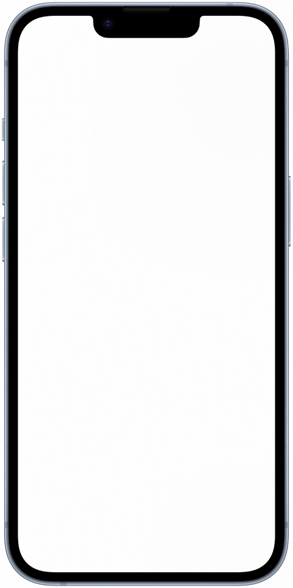

Brand, website, and the system behind it
Brand and web designer, no-code developer. Berlin.
Brand and copy
Figma to Webflow
Booking · Stripe · Zapier
4 client projects

Certification

Process
Five stages, every project
01
Understand
What the business sells, who buys, and the action the site needs.
Holistic Breathwork · four offers, one audience
- Coaching
- Breathwork
- Workshops
- Retreats
- One offerErlebe die Kraft deines Atems
- One audiencePeople wanting a first workshop
- One actionBook a workshop
02
Position
Offer made clear. Structure decided before anything is designed.
Touching The Art · tours, books, courses

03
Create
Brand, copy and the responsive interface as one system.
Nico Smat · one page, mobile first
approx
- Holistic BreathworkHb
- Touching The ArtTt
- Nico SmatNs
- PurposefulPu
04
Connect
Booking, payment, email and notifications joined to the site.
Purposeful · arrival to paid booking
- Lead capturePurposeful
- Form
- Zapier
- Follow up email
- Contacts in order
05
Hand over
Built in Webflow. CMS the client edits without me.
Touching The Art · two CMS templates
Tours
- Title
- text
- Museum
- text
- Date
- date
- Cover
- image
- Booking link
- link
Books
- Title
- text
- Cover
- image
- Description
- rich text
- Price
- number
- Stripe link
- link
Webflow CMSThe collection list as the client sees it in the Editor
Systems
What happens after the click
- EnquiryNico Smat
- Website
- Conversation
- Qualified enquiry
- BookingHolistic Breathwork
- Website
- Cal.com
- Confirmation
- Both sides notified
- Attendance list
- PaymentTouching The Art
- Website
- Stripe
- Receipt
- Customer email
- Owner notified
- Lead capturePurposeful
- Form
- Zapier
- Follow up email
- Contacts in order
Open to design and no-code roles
- [real address]
- [handle]
- Based in
- Berlin, Germany
- Languages
- [languages]
- Available
- [month]